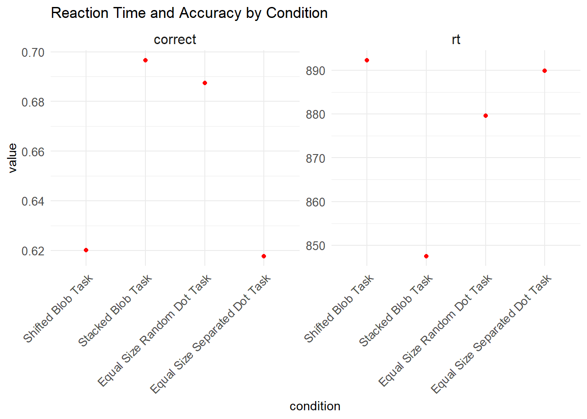
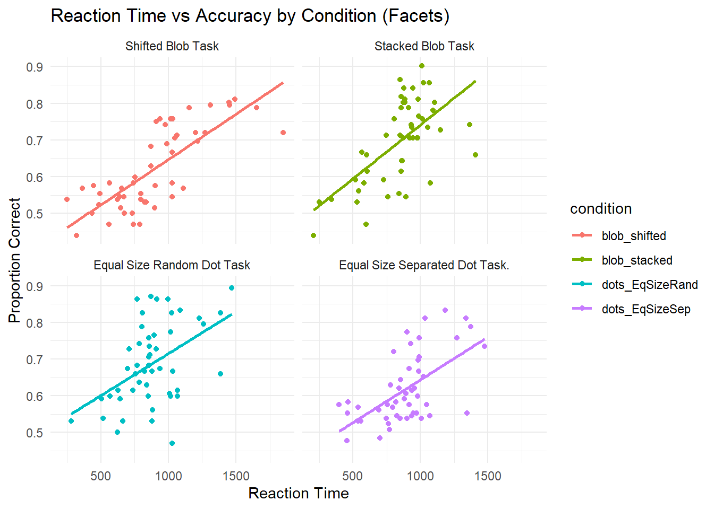
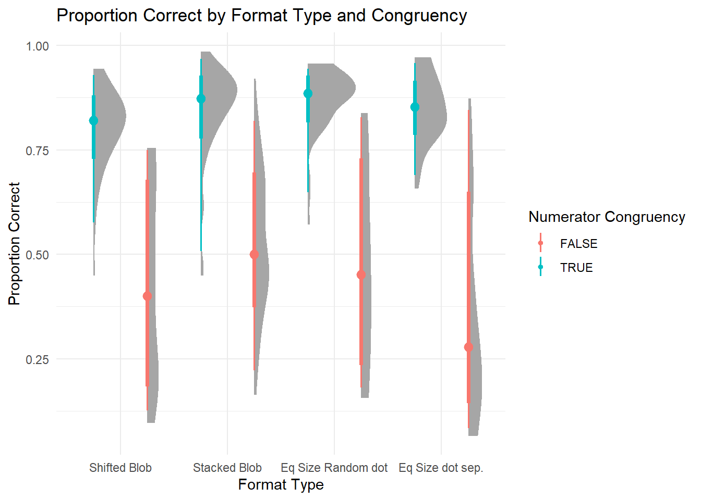

Proportional reasoning across formats
Abhi Patel1
1 Rutgers University
Introduction
Comparing proportions is sometimes very hard! But, even infants seem to be able to do it a little bit. The purpose of this science project was better understand how well people compare proportions when the proportions are presented in different formats. The purpose of this class assignment is to take the R code and plots we’ve been generating over the last several weeks and put it all together into one poster format.
Research Objectives
- Does average performance vary across format type?
- Does average performance vary across numerator congruency status?
- Does numerator congruency vary across format type? (i.e., is there an interaction)
Participants
A total of 99 adults participated in the study.
Methods
First, participants were introduced to a story about a magic ball and that the outcome (i.e., blue or orange) depended on the proportions. They were then asked to compare the proportions of different images.
In other words, participants were shown two images of the same kind at the same time and asked to decide which had a higher proportion of the shape (or dots) colored in blue.

Conditions
There were four different conditions that changed what kinds of images participants saw:
- divided blobs: blue and orange were entirely separate.
- segmented blobs: blue and orange could be part blue and part orange.
- separated dots: blue and orange dots were on opposite sides of the image.
- interleaved dots: blue and orange dots were intermixed.

Results
- Does average performance vary across format type, ignoring all other aspects of the stimuli?
 Average performance seems to vary. It seems that the tasks with the lower reaction times have higher accuracies.
- How are reaction time and accuracy related?

Reaction Time and Accuracy seem to be positively correlated with each other.
- How does numerator congruency interact with format type?

Numerator Congruency interacts with format type by seeming to result in consistently higher accuracies in “True” rather than “False”
Interpretation
Overall, we found that the tasks that resulted in the lower reaction times had the higher accuracies. This also makes sense as we found an overall positive relationship between reaction time and accuracy. To further investigate the accuracies, we looked at numerator congruency. We found that when the numerator congruency is true, there is overall higher accuracies than when it is false.
Conclusion
Provide two summaries of your experience during this assignment:
- What was the most annoying or hardest thing about the assignment?
I found the most annoying thing to be altering graphs from previous assignments. It wasn’t the worst, but it was just a bit tedious to do at once.
- What was the most satisfying or fun thing about the assignment?
The poster looks cool. I like the way everything is organized in this format.